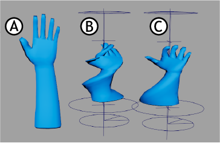
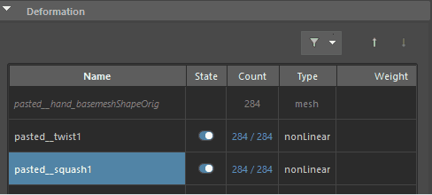
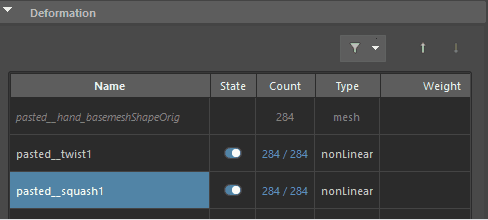
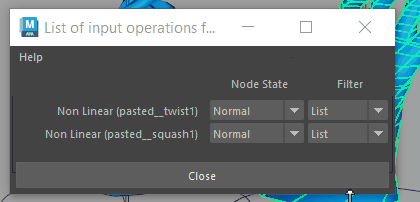

将多个变形器应用于对象时，这称为变形链。变形链中的每个变形器都将应用于受前一个变形器影响的几何体，并向其添加自己的变形。默认情况下，按照为对象创建变形器的顺序进行变形。

比较：手部模型 (A)，先扭曲后挤压变形的手部模型 (B)，变形顺序颠倒（先挤压后扭曲）的手部模型 (C)
由于此行为，改变变形器在变形链中的位置会影响最终结果。
有关常规信息，请参见节点、历史和变形顺序。
更改变形顺序
- 选择要变形的对象，然后打开“属性编辑器”(Attribute Editor) (Ctrl/Command+A)。
- 在“属性编辑器”(Attribute Editor)形状选项卡（例如：pCubeShape1）中，打开“变形”(Deformation)构件，然后选择要重新排序的变形器。
- 在变形器上单击鼠标右键，然后选择“对变形器重新排序”(Reorder Deformers) >“上移/下移”(Move Up/Down)或“移到顶部/底部”(Move to Top/Bottom)，或使用变形器表顶部的“上移/下移”(Move Up/Down)箭头

 。

。

更改变形器位置。
使用标记菜单更改变形顺序
- 在要变形的对象上单击鼠标中键，然后从标记菜单中选择“输入 > 所有输入”(Inputs > All Inputs)。
- 在显示的“输入操作列表”(List of input operations)窗口中，使用鼠标中键将变形器拖成您希望的出现顺序。

在“输入操作列表”(List of input operations)中单击鼠标中键并拖动变形器
更改点调整的变形顺序
- 在要变形的对象上单击鼠标右键，然后从标记菜单中选择“输入 > 所有输入”(Inputs > All Inputs)。
- 在显示的“输入操作列表”(List of input operations)窗口中，使用鼠标中键拖动要更改其顺序的调整节点的名称（默认名称：tweakn）。